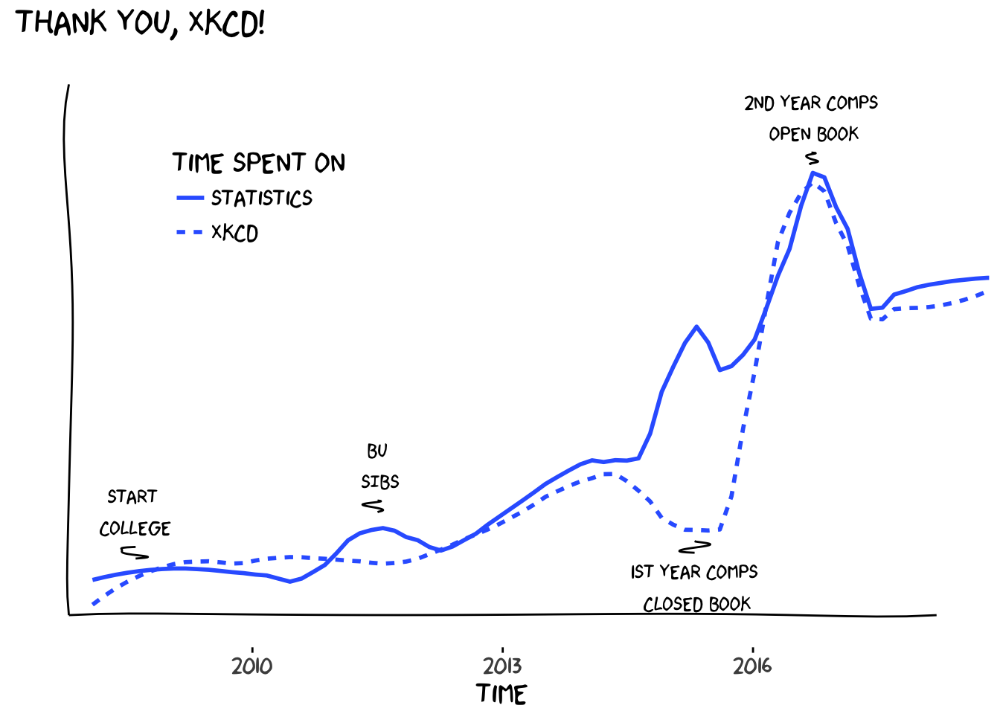

I’ve been looking for a way to incorporate xkcd in my #thankyou series & recently came across this gem:
Did you know that there is a package in R to make your graphs in the style of xkcd comics? #Rstats https://t.co/29Cnp9t20N pic.twitter.com/iY1UsFdEfJ
— Maria Gatta (@M_Gatta) February 18, 2017
xkcd has been there during some of my finest statistical moments, so they certainly deserve a proper thank you. I use the xkcd R package to explore the relationship between the time I’ve spent on statistics and the time I’ve spent on xkcd (correlation \(\neq\) causation…but \(\rho\) = 0.84).

You can make one too - run the code below with my data or input your own. Happy plotting!
Pro tip: if you don’t have the
xkcd font installed, check out
page 4 of the vignette.
library('ggplot2')
library('xkcd')
load(url("https://github.com/LFOD/real-blog/raw/master/data/xkcd_data.rda"))
#learn more about the xkcd package
vignette("xkcd-intro")set.seed(916)
xkcdlabel <- function(text,x,y, above= FALSE) {
if (above == TRUE){
add = 4
beg = 3
} else {
add = -4
beg = -3
}
ann <- annotate("text", x=x, y = y , label=text,family ="xkcd")
list(ann,
xkcdline(aes(xbegin=xbegin, ybegin= ybegin, xend=xend,yend=yend),
data.frame(xbegin=x,ybegin= y+beg , xend=x,yend=y+add), xjitteramount = 0.5))
}
p <- ggplot(data) +
geom_smooth(mapping=aes(x=time, y =spent, group = stat, linetype = stat),
se = FALSE,
method="loess",
span = 0.25) +
xkcdaxis(c(2008,2018),c(0,44)) +
xkcdlabel("BU\n SIBS",x=2011.5,y = 12) +
xkcdlabel("1st year comps\n closed book",x=2015.3,y = 1.5, above = TRUE) +
xkcdlabel("2nd year comps\n open book",x=2016.7,y = 42) +
xkcdlabel("Start \ncollege",x = 2008.6,y = 8) +
scale_linetype_discrete(name = "Time spent on") +
theme(axis.title.y=element_blank(),
axis.text.y=element_blank(),
axis.ticks.y=element_blank(),
legend.position = c(.25,.75)) +
ggtitle("Thank you, xkcd!")
p